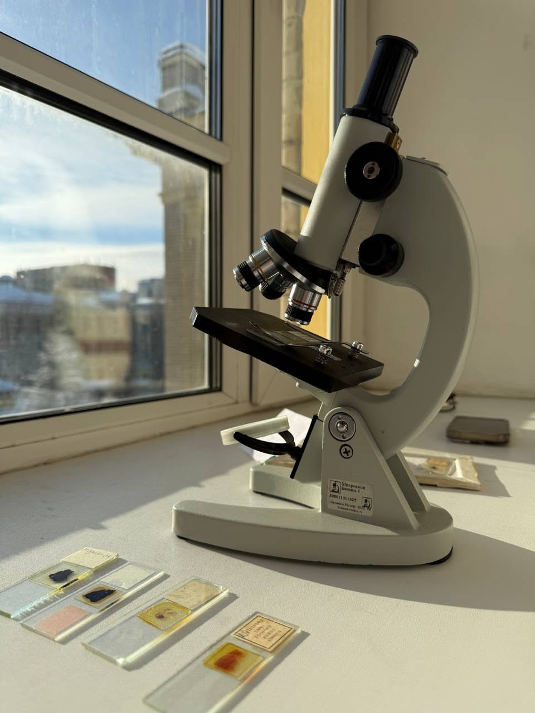

Hierarchical surface roughness in the sacred lotus and its application to self-cleaning coatings
Jiwon Han, Tomáš Moreau, Jonas Alvarez, Chinedu Bianchi - Department of Mechanical Engineering, Hanbit Institute of Technology
The sacred lotus (Nelumbo nucifera) shows hierarchical surface roughness. Earlier descriptions of this feature relied on still images, so the forces and time scales involved were not measured directly. We measured this feature in 3 specimens using micro-CT imaging and force sensors, and built a physical model at 2:1 scale. The model reproduced 41% of the measured response under laboratory conditions. Applied to self-cleaning coatings, the design reduced material use by 32% compared with a reference part of equal performance. Sensitivity analysis showed that feature spacing and layer stiffness explained most of the variation between specimens, while overall size had little effect. We discuss which parameters transfer to engineered systems and which depend on living tissue, and list three design rules for prototypes at centimetre scale.